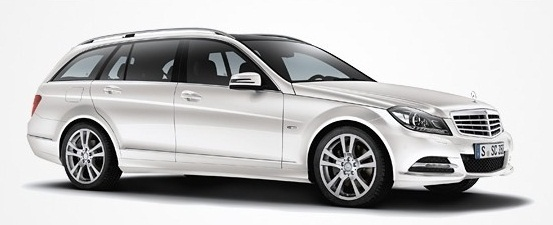

Mercedes på ICA
May 23rd, 2011 by user
Nya Mercedes:
- Snart på ett ICA Maxi nära dig!

Vill du se nya Mercedes-Benz C-Klass? Men blir det aldrig av att du åker till någon av våra återförsäljare? Då har vi en ny idé – åk till ICA Maxi istället!
Vill du se nya Mercedes-Benz C-Klass? Men blir det aldrig av att du åker till någon av våra återförsäljare? Då har vi en ny idé – åk till ICA Maxi istället!
-
- 11 maj Solna, Göteborg, Malmö Ystadsv.
- 12 maj Södertälje, Angered, Malmö Toftanäs
- 13 maj Häggvik, Kungsbacka, Löddeköpinge
- 14 maj Nacka, Alingsås, Trelleborg
- 16 maj Gävle
- 17 maj Sandviken DLS, Borås, Kristianstad
- 18 maj Falun DLS, Skövde, Hässleholm, Lindhagen
- 19 maj Borlänge, Jönköping, Älmhult, Nyköping
- 20 maj Mora DLS, Halmstad, Olofström, Katrineholm
- 21 maj Östersund, Söndrum/flygstaden, Bromölla, Eskilstuna
- 23 maj Haparanda
- 24 maj Luleå, Mellbystrand, Ronneby, Enköping DLS
- 25 maj Skellefteå, Ljungby DLS, Karlskrona, Västerås Hälla
- 26 maj Umeå, Växjö, Kalmar, Västerås Erikslund
- 27 maj Sundsvall, Vetlanda DLS, Oskarshamn DLS, Kumla DLS
- 28 maj Hudiksvall, Linköping, Visby, Örebro
- 31 maj Norrköping, Uppsala
- 1 juni Motala
- 2 juni Karlskoga
- 3 juni Kristinehamn
- 4 juni Karlstad
Tillbaka hem
Posted in Nyheter